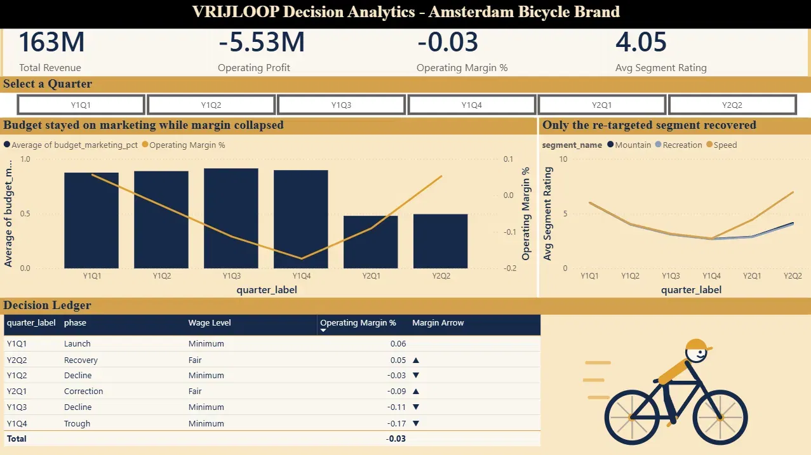

MSc Project · Decision Analytics
A decision-analytics build on a multi-quarter management simulation of an Amsterdam bicycle brand. Instead of reporting performance, it tracks the decisions a team made each quarter against the outcomes they produced — and asks whether those were the right calls.
6 quarters · 3 segments · quarter×product star schema · reconstructed simulation data · bounded rationality quantified at €7.35M
Interactive Dashboard
A decision dashboard: KPI cards, a quarter timeline, the budget-versus-margin story, segment ratings, and a decision ledger of what was chosen and what followed.

Built in Power BI Desktop and shown here as a static image · click to open full-size. The full interactive report (.pbix) is available in the project repository.
Objective
In the VRIJLOOP simulation, my team managed a bicycle brand across three market segments — Speed, Recreation and Mountain — making quarterly calls on pricing, marketing, product development, production and wages. Under time and information pressure, teams satisfice: they take the good-enough decision rather than the optimal one, and optimise the lever they can see instead of the lever that matters.
This project reconstructs that run as data and asks a sharper question than "how did we do?" It asks "were these the right decisions, and what did the wrong ones cost?" Two anchor mistakes drive the story: generic products sold with non-targeted advertising, and minimum wages used to cut costs.
The counterfactual model shows that doing the right thing — paying fair wages from the first quarter — was actually €260k worse in Q1, before it ever paid off. The correct decision looked worse on the quarter in front of you. That is precisely why a team judging quarter-by-quarter talked itself out of it.
The Data
This project uses a reconstructed dataset built to realistically mirror the VRIJLOOP simulation. The original platform exports were not available, so rather than hand-type plausible figures, I built a documented rules engine in Excel: every quarterly figure is generated from the team's decisions through causal rules, so the whole dataset is internally consistent by construction. Change one decision and the model re-flows.
The data is modelled as a star schema with two fact grains — a deliberate design choice, not an accident of the tables:
| Table | Grain | Rows |
|---|---|---|
| fact_results | quarter × product | 18 |
| fact_decisions | quarter × product | 18 |
| fact_company | quarter | 6 |
| dim_quarter / dim_segment / dim_product | reference data | 6 / 3 / 3 |
Company-level decisions (wage, budget split, profit) sit at quarter grain so they are never duplicated across product rows and can't be accidentally triple-counted. Product-level decisions sit at quarter × product. Keeping the two grains separate is what lets a scenario tab hold decisions fixed, change two inputs, and recompute outcomes through the same rules.
Methodology
The pipeline runs Excel → MySQL → Power BI, and every layer was validated against the one before it. The Excel rules engine generates the data; MySQL models and interrogates it; Power BI tells the story.
Positioning sets a product's rating ceiling; product-development spend lifts the rating with a one-quarter lag; the rating drives market share; share becomes units and revenue. On the people side, minimum wage collapses satisfaction, which lowers productivity, which raises unit cost and drags the rating further — a compounding loop. Marketing has diminishing returns gated by product fit.
The central question — can you market your way past a poorly-rated product? — is answered with a correlation, hand-rolled in SQL because MySQL has no built-in function for it:
-- Pearson correlation of rating vs market share, across all 18 rows SELECT ROUND( (COUNT(*)*SUM(segment_rating*market_share) - SUM(segment_rating)*SUM(market_share)) / SQRT( (COUNT(*)*SUM(segment_rating*segment_rating) - POWER(SUM(segment_rating),2)) * (COUNT(*)*SUM(market_share*market_share) - POWER(SUM(market_share),2)) ), 3) AS corr_rating_vs_share FROM fact_results; -- returns 0.944
Share tracks rating at r = 0.944. The team's bet — spend on marketing rather than fix the product — was mathematically doomed. Holding ~90% of budget on marketing a product the Customer Union rated 2.7/10 returned almost nothing.
The business runs four straight quarters of losses, deepening to −17.4% as revenue falls ~40% while marketing spend stays high. The correction — fair wages and targeting the Speed segment — lifts Speed's rating from 2.7 back to 7.0, but Recreation and Mountain, left generic, recover only to ~4.0. Even the recovery was bounded.
Modelling & Problem-Solving
A model is only as trustworthy as the judgement behind it. Two moments in the Power BI build are worth spelling out, because each is a place where the easy path gives a plausible but wrong answer.
The dashboard needed operating margin at both quarter level and across the whole six-quarter horizon. The tempting shortcut is to compute margin once and store it as a column.
A stored margin holds six fixed percentages. The total row could then only add them (meaningless) or average them — which would weight the €20.8M trough quarter equally with the €34.5M launch quarter. Both are wrong.
Wrote margin as a DAX measure, so it re-divides in whatever context it is shown — per quarter at quarter level, and total profit over total revenue at the grand total, giving a correctly weighted −3.4%.
Operating Margin % = DIVIDE([Operating Profit], [Total Revenue])
What it shows: understanding evaluation context — that ratios must be measures, not stored columns, so they aggregate correctly at every level.
Building the decision ledger, I tried to place targeting_flag (quarter × product grain) beside wage level and margin (quarter grain). Power BI returned "Can't determine relationships between the fields" and offered a one-click "Fix this."
For any given quarter there are three targeting values, one per product — no unambiguous single value to sit on a quarter-level row. Clicking "Fix this" would have added a relationship I didn't want and quietly compromised the star schema.
Declined the auto-fix. Kept the two fact grains separate and presented the targeting decision on its own, rather than forcing a relationship to get a plausible-looking wrong answer.
What it shows: the exact fan-trap the two-fact-grain design was built to prevent, showing up live — and the discipline to resist a one-click fix that produces a wrong number.
Recommendations
The point of judging decisions is to say what better ones would have been. Split into the calls that should have been made at the outset, and the moves the data supports from the trough onward:
Competency Shown
A four-layer rules engine with assumptions, a causal engine, clean outputs, and a scenario tab that recomputes the counterfactual.
Star-schema DDL with enforced keys, a reusable view, window functions, and a hand-rolled Pearson correlation.
Measures over calculated columns, evaluation context, quarter-on-quarter logic, KPI card design and a custom theme.
Two fact grains chosen deliberately to avoid a fan-trap, validated live when Power BI refused to combine them.
Framing the decision as the unit of analysis and quantifying the cost of satisficing at €7.35M.
Every layer checked against the one before — the SQL outputs and Power BI figures tie back to the Excel model to the euro.